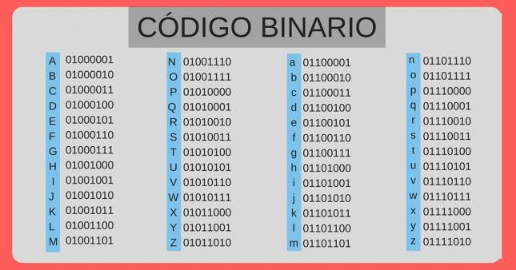
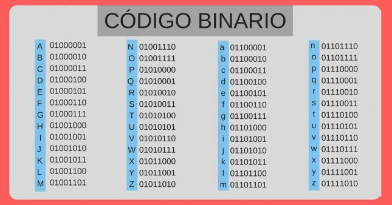

El código binario es el sistema numérico usado para la representación de textos, o procesadores de instrucciones de computadora, utilizando el sistema binario (sistema numérico de dos dígitos, o bit: el "0" y el "1"). En informática y telecomunicaciones, el código binario se utiliza con variados métodos de codificación de datos, tales como cadenas de caracteres, o cadenas de bits. Estos métodos pueden ser de ancho fijo o ancho variable. Por ejemplo en el caso de un CD, las señales que reflejarán el "láser" que rebotará en el CD y será recepcionado por un sensor de distinta forma indicando así, si es un cero o un uno.
En un código binario de ancho fijo, cada letra, dígito, u otros símbolos, están representados por una cadena de bits de la misma longitud, como un número binario que, por lo general, aparece en las tablas en notación octal, decimal o hexadecimal.
El Código Binario es un sistema de representación de textos o de procesadores de instrucciones de una computadora, que hace uso del sistema binario, en tanto, el sistema binario es aquel sistema de numeración que se emplea en las matemáticas y en la informática y en el cual los números se representan usando únicamente las cifras cero y uno (0 y 1).
Especialmente a instancias de las telecomunicaciones y de la informática este código se emplea con diferentes métodos de codificación de datos como ser: cadenas de caracteres, cadenas de bits, pudiendo ser de ancho fijo o de ancho variable.
Los sistemas de numeración de la actualidad son ponderados, lo cual significa que cada posición de una secuencia de dígitos tendrá asociado un peso, en tanto, el sistema binario es de hecho un sistema de numeración de este tipo: ponderado.
Otra de las características de este tipo de código es la continuidad que hace que las posibles combinaciones del código sean adyacentes, o sea de cualquier combinación del código a la siguiente cambiará solamente un bit (código continuo). Y el código será cíclico cuando la última combinación sea a su vez adyacente a la primera.
Por su lado, los códigos correctores de error y los códigos detectores de error suponen una solución muy importante y definitiva al problema de la transmisión de datos a través de impulsos eléctricos, ya que existen una buena cantidad de factores que pueden desencadenar un cambio en la señal eléctrica en un momento determinado ocasionando de este modo el error.


El Código Binario es un sistema de representación de textos o de procesadores de instrucciones de una computadora, que hace uso del sistema binario, en tanto, el sistema binario es aquel sistema de numeración que se emplea en las matemáticas y en la informática y en el cual los números se representan usando únicamente las cifras cero y uno (0 y 1).
Especialmente a instancias de las telecomunicaciones y de la informática este código se emplea con diferentes métodos de codificación de datos como ser: cadenas de caracteres, cadenas de bits, pudiendo ser de ancho fijo o de ancho variable.
Los sistemas de numeración de la actualidad son ponderados, lo cual significa que cada posición de una secuencia de dígitos tendrá asociado un peso, en tanto, el sistema binario es de hecho un sistema de numeración de este tipo: ponderado.
Otra de las características de este tipo de código es la continuidad que hace que las posibles combinaciones del código sean adyacentes, o sea de cualquier combinación del código a la siguiente cambiará solamente un bit (código continuo). Y el código será cíclico cuando la última combinación sea a su vez adyacente a la primera.
Por su lado, los códigos correctores de error y los códigos detectores de error suponen una solución muy importante y definitiva al problema de la transmisión de datos a través de impulsos eléctricos, ya que existen una buena cantidad de factores que pueden desencadenar un cambio en la señal eléctrica en un momento determinado ocasionando de este modo el error.

Especialmente a instancias de las telecomunicaciones y de la informática este código se emplea con diferentes métodos de codificación de datos como ser: cadenas de caracteres, cadenas de bits, pudiendo ser de ancho fijo o de ancho variable.
Los sistemas de numeración de la actualidad son ponderados, lo cual significa que cada posición de una secuencia de dígitos tendrá asociado un peso, en tanto, el sistema binario es de hecho un sistema de numeración de este tipo: ponderado. Otra de las características de este tipo de código es la continuidad que hace que las posibles combinaciones del código sean adyacentes, o sea de cualquier combinación del código a la siguiente cambiará solamente un bit (código continuo). Y el código será cíclico cuando la última combinación sea a su vez adyacente a la primera. Por su lado, los códigos correctores de error y los códigos detectores de error suponen una solución muy importante y definitiva al problema de la transmisión de datos a través de impulsos eléctricos, ya que existen una buena cantidad de factores que pueden desencadenar un cambio en la señal eléctrica en un momento determinado ocasionando de este modo el error.